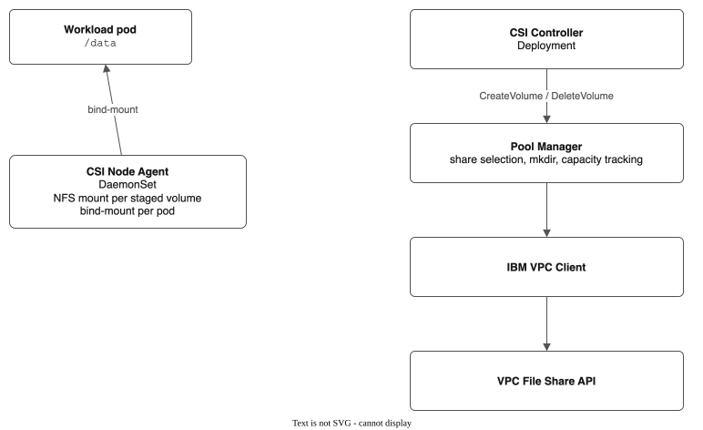

IBM VPC File Pool CSI Driver
A Kubernetes CSI driver that pools multiple PVCs as subdirectories within shared IBM Cloud VPC file shares, instead of the traditional 1:1 PVC-to-share mapping.
Why Pooling?
The standard IBM VPC file CSI driver creates one VPC file share per PVC — a 1:1 mapping. That hits three walls fast:
- Quota — VPC accounts cap at 300 file shares. A busy cluster with lots of small PVCs burns through that quickly.
- Speed — Creating a VPC file share takes 30-90 seconds. Pods sit waiting for storage.
- Cost — Each share has a 10 GB minimum and its own billing line. Hundreds of tiny PVCs mean hundreds of minimums.
Pooling flips the model: pre-provision a few large shares, then hand out subdirectories within them. Creating a subdirectory is instant, shares nothing with the VPC API, and lets many PVCs share the capacity of a single share. Think of it like a VMware datastore — one NFS export holds many volumes.
How It Works
Traditional CSI drivers create one VPC file share per PVC. This driver takes a different approach: a FileSharePool CR defines a pool of VPC file shares, and each PVC gets a subdirectory on an existing share.
VPC File Share (1 TB)
├── /pvcs/pvc-aaa... ← PVC-1 (10 GB quota)
├── /pvcs/pvc-bbb... ← PVC-2 (50 GB quota)
└── /pvcs/pvc-ccc... ← PVC-3 (20 GB quota)
This reduces VPC API calls, speeds up PVC provisioning (mkdir vs. 30-90s share creation), and lowers cost by consolidating storage.
Use cases and status
Included means it is in the latest release (the first one to have it is in the Since column) and in the driver today, with its maturity: GA (ready for production), Beta (tested, may change) or Experimental (works in the lab; use only for data you can lose). In progress means it is being built. Agreed, not built means the spec is agreed and building has not started. Proposed means a spec is still under review. Details are in FEATURES.md.
| Use case |
Status |
Since |
Notes |
| Many volumes on a few shared file shares |
Included, GA |
v0.1.0 |
The core of the driver. A volume is ready in under a second. |
| A pool grows by itself when it fills |
Included, GA |
v0.1.0 |
New shares are added in the background. Pools are in one zone. |
| Several pools and speed tiers in one cluster |
Included, Beta |
v0.2.0 |
One StorageClass per pool or tier. |
| Take a share out of service (drain) |
Included, GA |
v0.4.0 |
From the command line or the console. |
| VMs from the OpenShift catalog on a pool |
Included, Beta |
v0.14.0 |
The driver raises the memory limit of OpenShift's disk copy pods, which otherwise run out of memory on NFS. |
| Snapshot and restore one volume |
Included, Beta |
v0.4.0 |
A full copy on the same share. |
| Snapshot of a running VM, all disks at one moment |
Included, Beta |
v0.14.0 |
A short guest freeze. Red Hat does not support the method. |
| Instant VM snapshots (no copy) |
Included, Experimental |
v0.14.0 |
Needs a KubeVirt setting that Red Hat does not support. |
| Clone a volume |
Included, Beta |
v0.4.0 |
|
| Move volumes from another storage class into a pool |
Included, Beta |
v0.4.0 |
Works for a user with only the edit role since this release (issue #196). |
| Scheduled backups to a backup pool, with restore points |
Included, Experimental |
v0.14.0 |
Restore and delete from the command line or the console. |
| A second backup copy in IBM Cloud Object Storage |
Included, Experimental |
v0.14.0 |
Locked bucket; key held in Key Protect. |
| Browse a backup and restore single files |
In progress |
|
Spec: backup-file-restore. |
| Copy volumes to another cluster on a schedule |
Included, Beta |
v0.5.0 |
Direct NFS or HTTPS receiver. |
| Copy running VMs to another cluster, rewind and fail over |
Included, Experimental |
v0.14.0 |
Restore points; kubectl failover. Red Hat does not support the method. |
| Recover from a replication in the console |
In progress |
|
Issue #44. |
| Continuous protection of VMs, recovery point of seconds |
Agreed, not built |
|
Like Zerto or Veeam CDP. Spec: vm-continuous-data-protection. |
| Survive the loss of a zone |
Agreed, not built |
|
Spec: zone-loss. |
| Snapshot of a whole pool |
Agreed, not built |
|
Spec: pool-snapshots. |
| Metrics and alerts |
Included, GA |
v0.2.0 |
On OpenShift, user workload monitoring must be on (MONITORING.md). |
| OpenShift console pages |
Included, Beta |
v0.12.0 |
Pools, volumes, snapshots, replication, backups, monitoring, with help on each card and column. |
Group snapshots (VolumeGroupSnapshot) |
Not active |
|
The code exists; nothing acts on it. A VM snapshot already gives one moment for all its disks. |
| Golden image syncer |
Hidden |
|
Use the standard OpenShift catalog instead. |
Architecture

Key components:
| Component |
Location |
Role |
| CSI Controller |
pkg/driver/controller.go |
gRPC handlers for volume lifecycle |
| CSI Node Agent |
pkg/driver/node.go |
NFS mount + bind-mount into pods |
| Pool Manager |
pkg/pool/manager.go |
Core brain: allocation, deallocation, expansion, snapshots, clones |
| Share Selection |
pkg/pool/share.go |
Spread (most free) or binpack (least free) strategy |
| Clone Worker |
pkg/pool/clone_worker.go |
Async clone operations |
| Replication Controller |
pkg/pool/replication_controller.go |
Cross-region disaster recovery with incremental rsync |
| Hook Orchestrator |
pkg/hooks/ |
Lifecycle hooks (exec + HTTP) for replication |
| Admission Webhooks |
pkg/webhook/ |
Validating webhooks for all CRD types |
| Migration CLI |
pkg/migrate/ |
Migrate PVCs from stock IBM CSI driver |
| IBM VPC Client |
pkg/ibmcloud/client.go |
Thin wrapper around VPC file share API |
| CRD Types |
api/v1alpha1/ |
FileSharePool, SubVolume, Snapshot, ReplicationPolicy, BackupPolicy, BackupRestore, VolumeGroupSnapshot (not active), Hook |
CRDs
- FileSharePool (cluster-scoped) — defines a pool of VPC file shares with allocation strategy, auto-expansion, and capacity limits
- SubVolume (cluster-scoped) — tracks individual PVC allocations: which share, subdirectory path, requested size, and clone/snapshot state
- Snapshot (cluster-scoped) — tracks a snapshot of a SubVolume on the same share
- ReplicationPolicy (cluster-scoped) — defines replication from a pool to a destination, with pre/post-sync lifecycle hooks and incremental rsync
- BackupPolicy (cluster-scoped) — backs up the PVCs and VMs it selects into a snapshot pool, on a schedule
- BackupRestore (cluster-scoped) — one request to restore a backup into a new PVC
- VolumeGroupSnapshot (cluster-scoped) — not active; nothing acts on it
The words used here (pool, share, moment, snapshot pool and others) are defined once in CONTEXT.md.
Glossary
Core Concepts
The project's own words (pool, share, SubVolume, tier, drain, golden image, clone, hook and the rest) are defined once in CONTEXT.md.
IBM Cloud VPC
| Term |
Definition |
| dp2 |
The only VPC file share profile. IOPS range from 100 to 96,000; if spec.iops is not set, each share gets 100 IOPS whatever its size |
| IOPS |
I/O Operations Per Second; the performance budget for a share, shared by all PVCs on that share |
| VPC Access Mode |
The older file share access control mode. Shares are exported under a shared FQDN and differ by their NFS export path. Existing shares still work. The driver no longer creates them |
| Security Group Mode |
The file share access control mode the driver uses for every new share. A security group on the mount target's virtual network interface decides who can mount. By default it is the cluster's own security group |
| root_squash |
NFS server mapping of root (UID 0) to nobody (UID 65534); always enabled on VPC file shares, cannot be disabled |
| initial_owner |
VPC API parameter setting the UID/GID ownership of the share's root directory at creation time |
| Transit Gateway |
IBM Cloud service connecting VPCs across regions over the private backbone; required for cross-region replication |
NFS
| Term |
Definition |
| NFSv4.1 |
Network File System protocol version 4.1; adds session trunking and directory delegation over v4.0. Required by VPC file shares. |
| sec=sys |
NFS security flavor using standard Unix UID/GID credentials (AUTH_UNIX); required for chown to work on VPC shares |
| sec=null |
NFS security flavor using anonymous authentication; VPC shares negotiate this by default, making all files UID 99 |
| soft mount |
NFS mount option that returns I/O errors after a timeout; prevents pods from hanging when the NFS server is unreachable |
| hard mount |
NFS mount option that retries I/O indefinitely until the server responds; can cause pods to hang permanently |
| timeo |
NFS mount option: timeout per RPC attempt in deciseconds (default 600 = 60 seconds) |
| retrans |
NFS mount option: number of RPC retransmissions before a soft mount returns an error (default 3) |
| rsize / wsize |
NFS mount options controlling read/write buffer sizes in bytes (typically negotiated to 1 MB) |
| close-to-open |
NFS consistency model: changes to a file become visible to other clients only after the writer calls close() and the reader calls open() |
| bind-mount |
Linux mount operation that makes a directory accessible at a second mount point; used to expose individual subdirectories into pod paths |
CSI (Container Storage Interface)
| Term |
Definition |
| Provisioner |
The CSI driver identifier in a StorageClass (e.g., vpc-file-pool.csi.ibm.io); determines which driver handles PVC requests |
| Sidecars |
Standard Kubernetes CSI helper containers (csi-provisioner, csi-resizer, csi-snapshotter, liveness-probe, node-driver-registrar) that translate Kubernetes events into CSI gRPC calls |
| NodeStageVolume |
CSI RPC that mounts the entire NFS share at the staging folder kubelet gives for the volume; called once per staged volume on a node |
| NodePublishVolume |
CSI RPC that bind-mounts a SubVolume's subdirectory from the staging path into the pod's volume path |
| VolumeContentSource |
Field in CreateVolume indicating the new volume should be populated from an existing snapshot or volume (clone) |
| fsGroupPolicy |
CSI driver spec field controlling whether kubelet recursively chowns mounts to the pod's fsGroup; set to None to avoid failures with root_squash |
| StorageClass |
Kubernetes resource that maps PVCs to a provisioner and its parameters (pool name, tier, UID/GID, mount options) |
KubeVirt / OpenShift Virtualization
| Term |
Definition |
| CDI |
Containerized Data Importer — KubeVirt component that imports, clones, and uploads VM disk images into PVCs |
| DataImportCron |
CDI resource that periodically imports OS images from a registry into golden image PVCs on a schedule |
| DataSource |
CDI resource pointing to a bootable disk PVC; appears in the OpenShift Virtualization InstanceTypes catalog tab |
| DataVolume |
CDI resource that combines PVC creation with data import/clone in a single object. The pool's golden image syncer makes one per golden image |
| VolumePopulator |
Kubernetes mechanism CDI uses to populate PVCs |
| StorageProfile |
CDI resource auto-created per StorageClass; defines access modes, volume mode, and clone strategy for CDI operations |
| Template |
OpenShift resource defining a complete VM blueprint (CPU, memory, disks, network); appears in the Templates catalog tab |
| InstanceType |
KubeVirt resource defining a CPU/RAM preset; paired with a DataSource (image) to create a VM from the InstanceTypes tab |
| virt-handler |
KubeVirt DaemonSet component on each node that manages VM lifecycle; calls chown(107, 107) on filesystem-mode PVC mount directories |
| virt-launcher |
KubeVirt pod that runs the QEMU process for a single VM |
| QEMU |
Open-source machine emulator used by KubeVirt to run VMs; requires raw format disk images for filesystem-mode PVCs |
| qcow2 |
QEMU Copy-On-Write disk image format; cloud images are distributed as qcow2 but must be converted to raw for KubeVirt filesystem PVCs |
Kubernetes
| Term |
Definition |
| Finalizer |
Kubernetes metadata that prevents a resource from being deleted until a controller removes it; used on pools to block deletion while SubVolumes exist |
| Leader Election |
Pattern ensuring only one controller replica actively reconciles at a time; prevents concurrent pool state corruption |
| OwnerReference |
Kubernetes metadata linking a child resource to its parent; enables automatic garbage collection (e.g., auto-created StorageClasses deleted with their pool) |
| Admission Webhook |
Kubernetes extension that validates or mutates resources on create/update; the driver uses validating webhooks on all CRD types |
| SCC (SecurityContextConstraints) |
OpenShift resource controlling pod security permissions; the node agent requires the privileged SCC (standard for CSI drivers) |
Getting Started
Prerequisites
- Kubernetes 1.28+
- IBM Cloud VPC infrastructure
kubectl and helm (v3)
Installation
# Apply CRDs
make deploy
# Or install via Helm
make helm-install
See INSTALL.md for full setup instructions including IBM Cloud API key configuration.
Create a Pool
apiVersion: storage.ibmcloud.io/v1alpha1
kind: FileSharePool
metadata:
name: my-pool
spec:
zone: us-south-1
profile: dp2
shareSizeGB: 1000
maxShares: 5
autoExpand: true
allocationStrategy: spread
Use a PVC
apiVersion: v1
kind: PersistentVolumeClaim
metadata:
name: my-app-data
spec:
accessModes: [ReadWriteMany]
storageClassName: ibm-vpc-file-pool
resources:
requests:
storage: 10Gi
Development
make build # Build binary
make test # Unit tests with race detector
make test-coverage # Tests with coverage report
make test-vm # VM clone E2E test (requires ROKS or ROVS + OCV)
make lint # golangci-lint
make generate # Regenerate CRD types and DeepCopy
Run a single test:
go test ./pkg/pool/ -v -race -run TestAllocate_SpreadStrategy
Test Coverage
| Package |
Coverage |
pkg/pool/ |
89.2% |
pkg/util/ |
88.0% |
pkg/driver/ |
81.2% |
pkg/ibmcloud/fake/ |
100% |
pkg/migrate/ |
78.5% |
test/integration/ |
— (integration) |
510+ tests total, all passing with -race.
Documentation
Getting Started
| Document |
Description |
| INSTALL.md |
Build, deploy, and Helm chart |
| USER-GUIDE.md |
End-user guide: pools, PVCs, snapshots, clones |
| FAQ.md |
Frequently asked questions |
| examples/ |
Ready-to-use YAML examples |
Operations
| Document |
Description |
| UPGRADE-GUIDE.md |
Version upgrade procedures and compatibility matrix |
| DAY2-OPERATIONS.md |
Production runbook: health checks, draining, failover |
| MONITORING.md |
Metrics reference, alerting rules, Grafana dashboard |
| CAPACITY-PLANNING.md |
Sizing guidance, cost estimation, example configurations |
| BACKUP-RECOVERY.md |
Snapshot scheduling, DR setup, recovery runbooks |
| TROUBLESHOOTING.md |
Comprehensive troubleshooting guide |
| PERFORMANCE-TUNING.md |
NFS tuning, IOPS planning, benchmarking |
Configuration Reference
Architecture & Design
Development
Release
| Document |
Description |
| CHANGELOG.md |
Version history and release notes |
License
Apache License 2.0